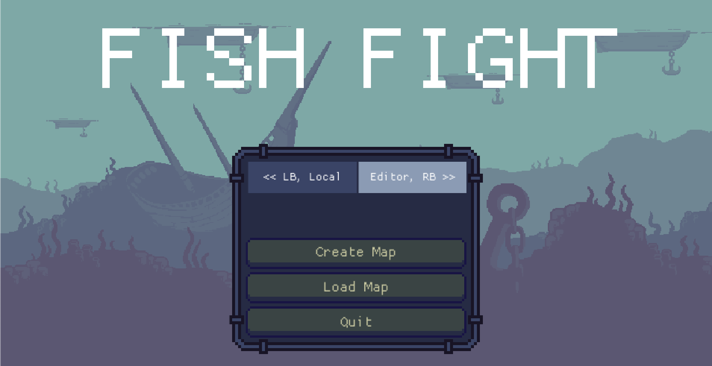

Fish Fight


Introduction
Fish Fight is a tactical 2D shooter, played by up to 4 players online or on a shared screen. Aim either left or right; the rest is up to clever movement and positioning in this fish-on-fish brawler! For more information about our origin story (Duck Game et.al.) and big-picture plans, see our design document.
Key Features (WIP)
- 2 to 4 players in either Local Multiplayer or Online Play
- Easy to pick up, emphasizing strategy over twitch reaction
- Customize characters with hats, saved to your cross-platform profile
- Create & explore user-made weapons, levels, audio and other scripted extensions
- Smart level creation tools
- Tournaments & matchmaking built in
Status
The game is fully playable:
https://twitter.com/fishfightgame/status/1424084016467226624
Community
Contributing
Anyone involved in the Fish Fight community must follow our code of conduct.
If you'd like to make something for Fish Fight, check out our help-wanted issues or just ask us on Discord. We'll soon post an updated roadmap for the next month or two of work ahead.
Before committing and opening a PR, please run the following commands and follow their instructions:
cargo clippy -- -W clippy::correctness -D warningscargo fmt
Learning Materials
- https://macroquad.rs/tutorials/fish-tutorial/
- https://not-fl3.github.io/platformer-book/intro.html
- https://sokoban.iolivia.me/ (we do not use an ECS)
- https://pragprog.com/titles/hwrust/hands-on-rust/
Install & play
- Install Rust with Rustup.rs
cargo run
We'll start distributing executables shortly!
Default key bindings
Keyboard left:
- movement: arrow keys
↑,←,↓,→ - pick/drop:
K - attack:
L - toggle AI:
0
Keyboard right:
- movement:
W,A,S,D(&Spacefor jump) - pick/drop:
C - attack:
V&LeftCtrl - toogle AI:
1
Gamepad:
- movement: direction axis
- pick/drop:
X - attack:
B - jump:
A - slide:
Down+Y
Credits
- Input Icons: Kadith's Icons by Kadith
Contributor Covenant Code of Conduct
Our Pledge
We as members, contributors, and leaders pledge to make participation in our community a harassment-free experience for everyone, regardless of age, body size, visible or invisible disability, ethnicity, sex characteristics, gender identity and expression, level of experience, education, socio-economic status, nationality, personal appearance, race, religion, or sexual identity and orientation.
We pledge to act and interact in ways that contribute to an open, welcoming, diverse, inclusive, and healthy community.
Our Standards
Examples of behavior that contributes to a positive environment for our community include:
- Demonstrating empathy and kindness toward other people
- Being respectful of differing opinions, viewpoints, and experiences
- Giving and gracefully accepting constructive feedback
- Accepting responsibility and apologizing to those affected by our mistakes, and learning from the experience
- Focusing on what is best not just for us as individuals, but for the overall community
Examples of unacceptable behavior include:
- The use of sexualized language or imagery, and sexual attention or advances of any kind
- Trolling, insulting or derogatory comments, and personal or political attacks
- Public or private harassment
- Publishing others' private information, such as a physical or email address, without their explicit permission
- Other conduct which could reasonably be considered inappropriate in a professional setting
Enforcement Responsibilities
Community leaders are responsible for clarifying and enforcing our standards of acceptable behavior and will take appropriate and fair corrective action in response to any behavior that they deem inappropriate, threatening, offensive, or harmful.
Community leaders have the right and responsibility to remove, edit, or reject comments, commits, code, wiki edits, issues, and other contributions that are not aligned to this Code of Conduct, and will communicate reasons for moderation decisions when appropriate.
Scope
This Code of Conduct applies within all community spaces, and also applies when an individual is officially representing the community in public spaces. Examples of representing our community include using an official e-mail address, posting via an official social media account, or acting as an appointed representative at an online or offline event.
Enforcement
Instances of abusive, harassing, or otherwise unacceptable behavior may be reported to the community leaders responsible for enforcement at e.soghe@gmail.com. All complaints will be reviewed and investigated promptly and fairly.
All community leaders are obligated to respect the privacy and security of the reporter of any incident.
Enforcement Guidelines
Community leaders will follow these Community Impact Guidelines in determining the consequences for any action they deem in violation of this Code of Conduct:
1. Correction
Community Impact: Use of inappropriate language or other behavior deemed unprofessional or unwelcome in the community.
Consequence: A private, written warning from community leaders, providing clarity around the nature of the violation and an explanation of why the behavior was inappropriate. A public apology may be requested.
2. Warning
Community Impact: A violation through a single incident or series of actions.
Consequence: A warning with consequences for continued behavior. No interaction with the people involved, including unsolicited interaction with those enforcing the Code of Conduct, for a specified period of time. This includes avoiding interactions in community spaces as well as external channels like social media. Violating these terms may lead to a temporary or permanent ban.
3. Temporary Ban
Community Impact: A serious violation of community standards, including sustained inappropriate behavior.
Consequence: A temporary ban from any sort of interaction or public communication with the community for a specified period of time. No public or private interaction with the people involved, including unsolicited interaction with those enforcing the Code of Conduct, is allowed during this period. Violating these terms may lead to a permanent ban.
4. Permanent Ban
Community Impact: Demonstrating a pattern of violation of community standards, including sustained inappropriate behavior, harassment of an individual, or aggression toward or disparagement of classes of individuals.
Consequence: A permanent ban from any sort of public interaction within the community.
Attribution
This Code of Conduct is adapted from the Contributor Covenant, version 2.0, available at https://www.contributor-covenant.org/version/2/0/code_of_conduct.html.
Community Impact Guidelines were inspired by Mozilla's code of conduct enforcement ladder.
For answers to common questions about this code of conduct, see the FAQ at https://www.contributor-covenant.org/faq. Translations are available at https://www.contributor-covenant.org/translations.
Gameplay
Controls
Keyboard Right
| Key | Action | |
|---|---|---|
| Up |  | Jump |
| Down |  | Crouch |
| Left |  | Move left |
| Right |  | Move right |
| K |  | Pickup/Drop |
| L |  | Attack |
| 0 |  | Toggle AI |
Keyboard Left
| Key | Action | |
|---|---|---|
| W |  | Jump |
| S |  | Crouch |
| A |  | Move left |
| D |  | Move right |
| C |  | Pickup/Drop |
| V |  | Attack |
| 1 |  | Toggle AI |
Gamepad
| Input | Action | |
|---|---|---|
| A Button |  | Jump |
| Y Button |  | Crouch |
| Left Thumbstick |  | Move left |
| Right Thumbstick |  | Move right |
| X Button |  | Pickup/Drop |
| B Button |  | Attack |
Items
Items are placed in levels and can be interacted with by players.
| Name | Description | |
|---|---|---|
| Musket |  | Fires up to three bullets, normal recoil, normal bullet speed. |
| Sniper |  | Fires up to two bullets, high recoil, high bullet speed. |
| Machine Gun |  | Fires many bullets, low recoil, normal bullet speed. |
| Cannon |  | Fires up to three bombs, normal recoil. |
| Turtle Shell |  | Blocks two attacks from behind, then breaks. |
| Shoes |  | Allows user to attack players by jumping on their heads. |
| Galleon |  | Summons a galleon that travels across the arena. Kills anything in its path. |
| Volcano |  | Summons a volcano that randomly shoots bombs into the arena. |
| Shark Rain |  | Summons sharks that rain down from above. Kills anything in their path. |
| Grenades |  | Throws up to three bombs that explode after short duration or on impact. |
| Mines |  | Place up to three mines that explode on contact. |
| Jellyfish |  | Fires a jellyfish that is controlled by the player and explodes impact. |
| Sproinger |  | Bounces player when jumped on. |
Multiplayer
Connection process in the FishFight is extremely low-level right now.
We do not have matchmaking server and we want to collect data and network setups and possible problems before doing the process fully automatic.

The only supported game mode right now: 1v1.
Connection Types
LAN
When both computers are connected to the same router: are on the same wifi, home network etc.
Send your local IP from "Self addr" field to your opponent, click "Probe connection" and if connection can be established - click "Connect".
STUN
When each player is under a NAT. Usually when its two players over internet with different network providers. This option may work, but may not, it depends on the type of nat, router configs etc.
Idea is exactly the same as with LAN: copy-paste your own "Self addr" over discord, probe connection, if it works - click "Connect"
Relay
When both players are on remote computers over internet, but STUN connection did not worked and router reconfiguration is not an option - there is a relay server available.
Relay server will introduce additional LAG - each packet will be forwarded through a server.
Connection idea is still the same, but instead of IP "Self addr" will be an ID on the relay server. Copy-paste it over internet, set "Opponent addr", push "Connect"
Router Configuration
When STUN server failed, but Relay is too slow - there is a way to improve gameplay experience. Go to router settings and forward ports 3400, 3401, 3402, 3403 to computer with the FishFight.
It still may depend on the internet provider, maybe the router itself is behind some global, provider NAT or something.
TODO: Make a better "Router configuration" section here.
Mechanics
Physics
As you might already know, Fish Fight is a homage to the excellent Duck Game and thus we have chosen to replicate the rather simple and straight forward linear physics found in that game. It follows standard platformer physics, with force being translated to two-dimensional velocity, acting against gravity and drag, every physics update (fixed_update).
The same physics system is used in Towerfall and Celeste.
To learn more about basic game physics, as they are implemented in Fish Fight, you can explore the following sources:
[Ask us about missing links!]
Fish Fight's physics implementation
As for the specifics of Fish Fight, I will elaborate in the following paragraphs. Please note, however, that the game is currently in a very early prototype stage, so the implementation is neither perfect nor, in any way, optimized, at this stage.
Scene nodes
The game uses the Macroquad library, by Fedor, who is also part of the core team of Fish Fight. This means that our scenes are composed of scene nodes, made by implementing the Node type. The most relevant method, when discussing physics, is the fixed_update method, which is called for every node, every physics frame. This means that, in order to explore the existing physics of any existing in-game object, you should browse to the corresponding node source file, in src/nodes, and look for the impl Node for T section and the encapsulated fixed_update implementation.
This method takes a RefMut<T> as an argument (can be both mutable and immutable), where T is the type of the node that it is being implemented for. From here, you can do many things; like manipulating the node, itself, through the RefMut<T> parameter, as well as access other nodes by fetching them from the scene, either by type, or by specific traits, made by calling node.provides([...]) in a nodes ready implementation. For examples of this, you can check the code of most nodes for the code providing the Sproingable trait, for example.
Examples of code for accessing other nodes:
#![allow(unused_variables)] fn main() { // This is from the ArmedGrenade node, showing how we iterate over players, checking for // collision and killing the player if the explosion "collides" with the player for mut player in scene::find_nodes_by_type::<crate::nodes::Player>() { let intersect = grenade_rect.intersect(Rect::new( player.body.pos.x, player.body.pos.y, PLAYER_HITBOX_WIDTH, PLAYER_HITBOX_HEIGHT, )); if !intersect.is_none() { let direction = node.body.pos.x > (player.body.pos.x + 10.); scene::find_node_by_type::<crate::nodes::Camera>() .unwrap() .shake(); player.kill(direction); } } }
#![allow(unused_variables)] fn main() { // This is from the Sproinger node, iterating through nodes providing the Sproingable trait // and checking for collision, before performing a "sproing" on them, if they overlap for (_actor, mut body_lens, size) in scene::find_nodes_with::<Sproingable>() { if body_lens.get().is_some() { let body = body_lens.get().unwrap(); if body.speed.length() > Self::STOPPED_THRESHOLD { let intersect = sproinger_rect .intersect(Rect::new(body.pos.x, body.pos.y, size.x, size.y)); if !intersect.is_none() { let resources = storage::get_mut::<Resources>(); play_sound_once(resources.jump_sound); body.speed.y = -Self::FORCE; node.has_sproinged = true; // self.sprite.set_animation(1); // self.sprite.playing = true; Sproinger::animate(node.handle()); } } } } }
Collision
Collision between nodes is done by creating collider Rect or Circle objects and calling their intersect (Rect only) or overlaps methods. The former will return anOption<Rect>, where the contained Rect represents the intersection between the two colliding Rect objects, or None, if there was no intersection. The latter will return a bool that is true if there was any overlap between the two objects. To check for collisions with the map, you have several methods in the scene module that lets you check for collisions on the various map layers. For examples of map collisions, once again, the Player implementation is a good place to start. Furthermore, PhysicsBody members may hold a collider that Macroquads physics engine will collide against Solid objects in the scene (ground tiles, for the most part). These colliders will have to be added to the collision world, as actors. See the constructor of the player node for an example of how this is done.
NOTE: To get the hitbox of a Player node, use Player::get_hitbox(), so that you get the correct size if the player node, for example, is in a crouched state.
Force
When it comes to enacting force on nodes, this is done by setting a speed on a node. Most nodes will have a body, but not all, as the primary use for a body is to hold a collider. For simpler nodes, we might just put a position vector and a speed vector directly on the node, in stead. This can be checked in the specific nodes implementation. As mentioned, we set the velocity directly, in stead of accumulating force over several frames, as this leads to much more predictable and precise game physics (the age old Mario, using acceleration, vs Megaman, using binary force, dichotomy).
This means that, in order to implement an explosion, for example, you would decide on a force, find the node(s) that the explosion will act upon and apply this force by setting the speed of the node, or the nodes body, depending on its implementation, to the value of the force in the appropriate direction. See below for a simplified example of something exerting a force, on the x-axis, on a player, if an arbitrary hit check condition is fulfilled:
#![allow(unused_variables)] fn main() { impl T { pub const FORCE: f32 = 900.0; } impl Node for T { for mut player in scene::find_nodes_by_type::<crate::nodes::Player>() { [hit detection] if is_hit { let direction_is_right = node.body.pos.x > (player.body.pos.x + 10.); player.body.speed.x = if direction_is_right { FORCE } else { -FORCE // negative force } } } } }
The same methods would be used for movement, for example, but instead of checking for a collision, you would check for input. For examples of this, check out the player node implementation.
Environmental weapons
Environmental weapons are weapons that don't follow the structure of weapon and projectile, rather, they spawn one or more entities intended to harm enemy.
Document notes
This document doesn't explain all the concepts, since some are already explained in Physics.
EW is used as abbreviation for Environmental Weapon.
Mechanics and examples
For each pickup, it's possible to spawn the weapon only once; after usage, most will disappear entirely from the level.
Currently, there are a few EWs:
- Curse: a skull that chases the closest enemy, in a sinusoidal motion, for a limited amount of time;
- Galleon: a large vessel that crosses the screen horizontally;
- Shark rain: a group of sharks falling vertically from the top, at random horizontal positions.
EWs may, or may not, self-pwn the owner.
Code design
EWs are typically designed in two main types: the item, which is what the player can pick up/hold/throw, and the weapon itself, which is the set of entities that are summoned and harm the enemies.
The general design is very similar to all the other weapons, with a few distinctions.
The shoot() routine, itself common to the other weapons, is a good starting point:
pub fn shoot(galleon: Handle<Galleon>, player: Handle<Player>) -> Coroutine {
let coroutine = async move {
/* ... */
if galleon.used {
player.state_machine.set_state(Player::ST_NORMAL);
return;
}
galleon.used = true;
FlyingGalleon::spawn(player.id);
player.weapon = None;
/* ... */
galleon.delete();
player.state_machine.set_state(Player::ST_NORMAL);
};
start_coroutine(coroutine)
}
A very important concept is that we must avoid race conditions on multiple shots. Since shooting is asynchronous, on the first shot, we need to set a flag (in this case, used) that makes other concurrent executions return.
Most EWs are usable only once per level; this is implemented by removing the weapon from the player (see above), and deleting the item from the node graph.
Since most of the EWs don't kill the owner, we store the Player id in the spawned type, and skip it on collision test:
pub struct FlyingGalleon {
/* ... */
owner_id: u8,
}
impl scene::Node for FlyingGalleon {
fn fixed_update(mut flying_galleon: RefMut<Self>) {
/* ... */
for mut player in scene::find_nodes_by_type::<crate::nodes::Player>() {
if player.dead {
continue;
}
if flying_galleon.owner_id != player.id {
/* Collision test here */
We also check if a player is dead, before performing the the collision check: since the EWs are generally large, performing the test multiple times is not correct; for example, it has the immediate effect of causing multiple death effects.
EWs typically need to know the boundaries of the map; see the FlyingGalleon#start_position_data() routine:
fn start_position_data() -> (Vec2, bool) {
let resources = storage::get::<Resources>();
// We query the map size from the raw tiled map data:
let map_width =
resources.tiled_map.raw_tiled_map.tilewidth * resources.tiled_map.raw_tiled_map.width;
let map_height =
resources.tiled_map.raw_tiled_map.tileheight * resources.tiled_map.raw_tiled_map.height;
// Note also how we generate a random boolean via MacroQuad `rand` APIs:
let (start_x, direction) = if gen_range(0., 1.) < 0.5 {
(0. - FLYING_GALLEON_WIDTH, true)
} else {
((map_width - 1) as f32, false)
};
let start_y = gen_range(0., map_height as f32 - FLYING_GALLEON_HEIGHT);
(vec2(start_x, start_y), direction)
}
Netcode
The netcode in Fish Fight is something called delay-based netcode by many players, but is more specifically deterministic lockstep. A peer-to-peer architecture that is completely deterministic.
This video was the main inspiration for our netcode architecture:
What is described from 6:09 to 7:15 is the current state of our netcode. The video proceeds to explain the limitations of this approach and how they iterated from there to what can more accurately be called GGPO. That is where we are headed as well, beginning with a minimal foundation that we have a full grasp and agency over. From the intentionally naive “Player Unhappy” model we will gradually work our way towards “Player Very Happy”.
Terms and Concepts
Before we go any further, let’s explain some terms and concepts.
First off, what makes online multiplayer games difficult to make? There are two main issues: (1) The latency (travel time) for information over the internet, and (2) when circumventing that, ensuring that nobody can cheat while also fairly integrating everyone’s input. What’s important isn’t that the solution is ”correct”, but that it feels great to your players. Game networking consists largely of clever tricks and smoke and mirrors, all to disguise the inherent limits of space-time.
A peer/client is someone who joins an online game session. (We will use these terms interchangeably, but there might be reasons to differentiate the two). For example, when you play Minecraft, you join servers as a client. Most games these days use a server-client architecture, where clients will join a server that handles everything in the online game session, and streams necessary data to the clients.
However, this isn’t the only way of handling things. Indeed, before the server-client architecture became commonplace, there was the peer-to-peer (P2P) architecture. Instead of relying on an authoritative server to tell the clients what’s happening, the peers instead tell EACH OTHER what is happening. This means that any one peer has to send out data to every single other peer, and as such the required bandwidth scales linearly as more players join. For this reason most games just use the server-client system for anything more than 6-8 players. However, for a game like Fish Fight which will only have 2-4 players in any one given match, a peer-to-peer system will make more sense.
This has several benefits. First and foremost, there’s no need to pay for hosting. While for a small project like Fish Fight, with a relatively simple simulation, that cost would likely be low. But there’s a plethora of problems that must be addressed: that cost isn’t zero and still has to be paid somehow, and if the game gets immensely popular the price will quickly skyrocket. And then you must also write a load distribution system, and DDOS protection, the list goes on. A peer-to-peer architecture offloads all the costs to the players, who are in any case already running the simulation. This also means that you don’t need to maintain two separate client and server codebases, that must exactly line up in behaviour. Peer-to-peer might even offer lower latency, since the packets don’t have to go back and forth through a server.
This is because hosting servers is EXPENSIVE. For example, hosting a Minecraft server on Minecraft Realms is $8 dollars per month. That’s not much, but it's only one session. If we assume that this will “only” have a max player count of 40 people per day, that means we have to host 10 servers. That means $80 dollars per month. This doesn’t even take into account all of the other things we might have to worry about when developing a server-client architecture, like having to maintain two different codebases at the same time.
As such, making a peer-to-peer game makes sense at this scale. However, any one who wants to make an online multiplayer game MUST understand that every multiplayer solution is specialized to your use-case. The server-client architecture has many other benefits, mainly scalability. But also, in Fish Fight there is no persistent state or complex systems that must always be online. The ”servers” in P2P go offline as soon as a player quits.
The Authority is whoever decides what is true, and can overwrite anyone else’s state. The authority isn’t necessarily one party, but rather authority is held over singular objects or values. For example, a player might hold authority over a ball they are kicking, so they don’t have to ask the server for confirmation before interacting resulting in a snappier experience. This isn’t exactly applicable in a lockstep P2P architecture, but is foundational for client-servers so you’ll likely see the term if you ever read anything about networking. In those cases the server is almost always the authority, so the players can’t cheat.
Listen Servers are a network architecture/topology not to be confused with peer-to-peer. It is simply a client-server architecture where one of the clients hosts the server. This combines the cost benefits of a P2P topology while also allowing for better lag compensation methods. It still requires the same bandwidth as P2P, but only for the client who is running the server so the game is no longer capped by the slowest connection. Fish Fight might eventually move to this topology or move to a P2P model.
Ping/Latency/Round Trip Time all relate to the time it takes for a message to travel over a network. Latency is the time it takes to travel from the sender to the recipient, while Round Trip Time (RTT) and Ping refers to the time it takes both back and forth. RTT however is not necessarily twice the latency, although often very close. On the network, different conditions and even routes means that times will vary.
Jitter is related to latency, and is the amount by which it varies. A bad connection does not only have long latency, but the time it takes for packets to arrive will also vary greatly. This is a major hindrance when you want data to arrive in a smooth and regular manner, such as frames in a video, sound in a voice chat or input for a player. This is managed by adding a Buffer, which stores values for a short while and then dispenses them like an even flow. The tradeoff is that the fastest packets are slowed down to be in time with the slowest packets, leading to an overall slowdown.
Then there’s Packet Loss, where a packet gets completely lost at some crossroad of the internet. Bad connections also means that not all packets will arrive. This is countered by adding Redundancy. Common ways to compensate is to send packets multiple times, so at least one is likely to arrive, or send a confirmation once a packet is received. If the confirmation is not received, resend the packet until you get a response.
For some slightly more low-level things that you can do without:
TCP/UDP relates to packet loss. UDP is a transport protocol on the IP stack that “simply” sends messages, fire-and-forget, with no regard to whether it arrives. TCP on the other hand has more overhead but guarantees that your messages arrive. FishFight uses UDP for speed, and implements a custom redundancy layer on top of that for extra performance. TCP is often overkill, and a custom built solution almost always works better since it can exploit the exact workings of your game. Overhead is the extra data that is sent every packet, and adds to the required bandwidth. By sending more data per packet, the overhead will make up a smaller part of the data sent.
Delayed Lockstep
Anyways, we explained the peer-to-peer part, but you’re probably wondering what is deterministic lockstep. Gaffer on Games already wrote about this in an article you can read here, but in summary.
At its very basics, lockstep works by collecting input from every player and then simulating one frame once all input is gathered. In other words, the only thing that gets transmitted between players is their input. Input often can be packed into a single byte, and therefore very little bandwidth is required. When the input then arrives, the simulation is advanced one step. Since everyone waits for input from each other, everyone steps in sync.
But however small the packets are, the latency will remain largely the same. To wait for every player to send their input each time would mean that the game can not update faster than (in the best case) 1/RTT/2 Hz (confirmation can be sent later). If you want your game loop to run at 60Hz, you can’t have an RTT over 30 ms which is difficult to achieve outside of wired and geographically small networks.
Enter: Delayed Lockstep. The ”delay” part is an input buffer that stores inputs for a short while before executing them. Now every input packet also contains a frame timestamp so that all remote input can be matched up with the local input and executed at the same frame. As input rolls in it is stored in the matching slot in a buffer, and by the time a frame should be simulated the corresponding buffer slot should be filled with input from all players. The latest input is then popped off the buffer, which shifts one frame forward, and the game progresses one step. By maintaining this buffer (barring major interruptions) the game always has input at hand, and can as soon and as quickly as it wants. But as you might guess, there’s a tradeoff, and that is of course the added delay. The remote players already have some delay so it doesn’t matter too much, but the local input must be slowed down to match the slowest player, leading to slower response to keyboard input. To minimise this delay, the buffer should be as short as possible. To give everyone’s input time to arrive the buffer must be as long as the slowest players ping + their jitter. To improve the experience, your networking should continually measure how long it is between the last player’s input arriving and the buffer running out, and then adjusting the buffer to be as short as possible. A too long buffer means unnecessary input delay, but if the buffer is too short and runs out the game must freeze until input arrives. It’s a fine line to walk, but it’s usually better to lean towards too long than having interruptions.
However, there’s one big, or rather HUGE, issue: Determinism. Since all that is sent between clients is their inputs, one requirement must be met. Given the same world state and inputs, every time, on every computer, OS, architecture, instruction set, etc. etc. the game must be able to generate the exact same next frame. The tiniest deviation accumulates and quickly makes the game unplayable. The main source of nondeterminism is floating point arithmetic. Performing operations with floating point numbers famously produces varying results, which depends on many factors. Random number generators must also be kept in sync.
We want to reduce the amount of data being sent online by each peer, AND we don’t want to have people hack the game. The way to do this then, is to have players only send their inputs to each other, so that you can’t have people change their position all willy nilly like this.
However, we want to make sure that when inputs are sent to each player, the game itself is fully deterministic: the same thing must happen with the same inputs every time to prevent clients from desyncing with each other. There’s a lot of ways to handle this that we not going to get into, but I’m sure could make for a very interesting separate article.
For now, we are going to assume that the game itself is fully deterministic and just take a look at the code itself in src/nodes/network.rs.
We are first going to take a look at the data being sent online, the packets. In this case, the packets in network.rs are called messages, which is what they are so it makes sense.
#![allow(unused_variables)] fn main() { #[derive(DeBin, SerBin)] enum Message { Input { // position in the buffer pos: u8, // current simulation frame frame: u64, input: Input, }, Ack { // last simulated frame frame: u64, /// bitmask for last 8 frames /// one bit - one received input in a frames_buffer ack: u8, }, } }
Each message has two different parts to it. It has an Input struct, which contains the position in the input buffer, the frame that the game is currently on, and the actual input. It also has an Ack struct (which is sent to assure the other clients they received their input) that contains the frame the game is on. The Ack struct also has a bitflag that tells what inputs they got from what clients.
Now, the person reading this might wonder: why is there an input buffer here? Well, we forgot to mention one thing. See, in the real world, deterministic lockstep doesn’t actually work. Well, it doesn’t work the way you might think at first.
Every packet being sent online is always going to have a little bit of delay to it (latency) since there is going to be some distance that is covered by the packet as it travels. Even at the speed of light, it still takes a nanosecond for a packet to get across from one side of the room to the other.
As such, if you were to have a naive interpretation of deterministic lockstep without accounting for latency, it would just freeze every single frame as it waits for inputs to appear.
This image taken from Infil’s article about the netcode in Killer Instinct (with permission!) should show what that looks like.
(Note that this isn’t actually delay-based netcode either, but that’s a discussion for another time)
What instead is done is adding in an artificial delay to the program itself, and having a buffer of input of a certain amount of frames. This allows the inputs time to arrive.
When the inputs come to the other players, it gets added into the input buffer which also lasts a certain amount of frames. This means that most moves and stuff feel noticeably slower with added delay.
This concludes part 1 of our "Netcode Explained" series. In part 2 we will do a code walk-through and piecemeal analysis.
Written by Srayan “ValorZard” Jana and grufkok, with editing by Erlend
Editor
The editor is a tool for designing custom levels in Fish Fight. You can use it to examine and edit existing levels, and also create your own. This chapter will contain guides on how to use all of the features the editor has to offer and even a high-level overview of its API for those who are interested in contributing to its development.

Accessing the editor
The editor can be accessed from the "Editor" tab on the main menu. Selecting this item by clicking on it, or using the right arrow key on your keyboard (or if you're using a gamepad: the "right button"), will present two options: "Create Map" and "Load Map".

User-interface overview
There are 3 main areas of the UI for designing your level: the tool selector, map, and layers list. Perhaps the most important area is the map as it acts as a preview of your level. The tool selector and layers list are available as toolbars that provide a set of tools for you to edit and examine your level as needed.

Note: Icons are not yet available for the tool selector. The first one is the tile placement tool and the second is the eraser tool.
Toolbars
There are currently 2 primary toolbars available for the editor: the layers list and tool selector.
Layers list
Create or edit layers of your Fish Fight level. This toolbar provides a list of selectable layers. Selecting a layer will display another view containing a list of the components grouped under that layer. There are currently 2 types of layers: tiles and objects:
Tile layers contain textures that can be placed in the map area. They can be created to be collision layers as well, allowing them to behave like collidable objects.
Object layers are composed of game objects categorized by a MapObjectKind. The current types of objects available are: Item, SpawnPoint, Environment, and Decoration.
Tool selector
As the name describes: provides a set of tools for editing layers in the map area of the editor. Currently, the following tools are available:
- Tile placement
- Eraser
Contributing
Fish Fight aims to be a highly contributor-friendly game. If you haven't already, please take some time to read the community guidelines.
Development Tracks
Our Tracks are ongoing projects with one or more leads. Some are permanent (e.g. Items or Editor) while others are temporary (e.g. Special Tiles or Physics). These are the recommended jumping-on points for new contributors.
Fields of contribution
Games are a synthesis of many different talents. Like most games, we're starting out code-heavy as we're building out the core functionality. Thanks to our deep focus on modding however, over time we expect contributions like level editing or pixel remixing to be even more plentiful and diverse than the field of coding.
Code 💻
If you're interested in making a change that will involve hacking on the game's source code, we have a quick reference on how to get started at Contributing Code!
Sub-tracks:
- Items
- Level Editor
- Special Tiles
- Juicing
- Physics (parent track missing)
- Infrastructure (parent track missing)
Pixels 🎨
There are three primary types of art assets in Fish Fight:
- Items
- Tiles & Objects
- Characters
Soon to be a proper book page: https://cdn.discordapp.com/attachments/785221806214479872/899304557979504650/How_to_draw_a_weapon_the_Fish_Fight_way.pdf
Any of our items labeled art-needed are missing an art asset.
Audio 🎶
SFX
Right now the easiest way in is to create new SFX for an item.
Prior art in https://github.com/fishfight/FishFight/tree/main/assets/sounds
Music compositions
Prior art in https://github.com/fishfight/FishFight/tree/main/assets/music
Game Design 👾
Items
See the Items track.
Levels
With the v1 completion of our upcoming Level Editor, it will be possible to create new levels from within the game itself.
Contributing Code to Fish Fight
Proposing code changes has 3 main steps:
- Setting up your development environment
- Pick an issue to work on
- Write code and submitting for review
1. Setting up your development environment
Before starting
Make sure Rust is installed with Rustup.rs.
Have an account on GitHub: this is where you'll find the source code for Fish Fight.
Getting the source code
Fish Fight uses git as its established choice of version control. You'll be using it to clone, track, and manage the source code locally on your machine.
To get a copy of the code, you'll first need to fork the repository. The GitHub repository for Fight Fight is available here. This will allow you to make changes to the project without affecting the original one.
Once you've forked the Fish Fight repository, you can now clone it:
git clone https://github.com/YOUR_ACCOUNT_NAME/FishFight.git
It's also possible to clone the repo using SSH or GitHub CLI. For more information on how to do this, see the official GitHub documentation.
Depending on your connection, the clone can take around 1 minute.
By the end of this step, you should have successfully forked and downloaded a clone of Fish Fight on your machine.
Build and run
You can now build your forked copy of Fish Fight:
cargo build
This process should take about a minute or two depending on your machine. You can also build and run the game with a single command:
cargo run
2. Finding a good first issue
Now that you can build and run Fish Fight source code, let's find something to work on! We recommend all newcomers start with our Development Tracks. You can also browse project's issues list and pick something with a help wanted label. In general, you can comment on an issue expressing interest and someone will assign it to you.
Additionally, if there's a track or issue you're particularly interested in, but you don't know where to start, feel free to reach out to the Fish Fight Discord community with your questions and someone should reach out shortly!
3. Write code and submitting for review
In general, Fish Fight uses a branch-based workflow (or GitHub flow) for submitting changes to the project.
Create a new branch
You'll want to create a new branch off main:
git checkout -b <branch_name> main
You'll replace <branch-name> with something short and descriptive. For example, if you're adding a new
item to Fish Fight, your branch name might look like this:
git checkout -b add_new_weapon main
Commit your changes
Once you've made the desired changes to the code and you're ready for someone on the Fish Fight team to review, you need to commit your work. But first, we have to run a few commands to ensure the code you're submitting is properly formatted:
cargo clippy -- -W clippy::correctness -D warningscargo fmt
Now we can start committing your work. First, stage your changes:
git add
Now commit. It's always good practice to provide a short message that details what the changes are. For example:
git commit -m "Add a new weapon"
Submitting for review
You can now start submitting your work for review. First, push your changes:
git push
This will create a new branch on your forked copy of Fish Fight. You can then proceed making a pull request. This is how the Fish Fight team will review and provide feedback on your work.
More information on contributing using GitHub.
Simple Gun Weapon
This section will walk through the process of adding a new gun weapon to Fish Fight, using a sniper weapon as an example.
Planning
Before jumping into the games code, it is a good idea to do some planning about what you want your new weapon to do. I determined that my sniper weapon should have the following properties:
- High bullet speed
- Large recoil
- 2 bullets
Implementation
Open your cloned "FishFight" directory using your code editor of choice.
The item definition
To add an item or, in this case, a weapon to the game, you will first have to define the item in a data file. These files are located in
assets/items and will typically have the same name as the item's id. Since we are creating a sniper rifle, we can give this file the
name sniper_rifle.json. This path to the file must also be added to the file assets/items.json, so that game will know where to look
for it. This is done by simply adding the path to the file, relative to the items.json file, to the array within. In this case, the path
that we add will be items/sniper_rifle.json.
Now, it is time to define the weapons parameters inside the items.json file. Begin by creating a new object and adding
the id (sniper_rifle) and the item type (weapon).
Every item that we add will also need a set of sprite parameters (SpriteParams) that define the sprite that will be drawn
when the item is on the ground, before being picked up by the player. Typically, it will be enough to include a texture id here,
as things like sprite size will most often be defined in the texture's entry in the assets/textures.json file.
We will also need to define a collider size, that will be the size of the collider used when checking if a player is close enough to the item to pick it up:
{
"id": "sniper_rifle",
"type": "weapon",
"sprite": {
"texture": "musket"
},
"collider_size": {
"x": 16,
"y": 16
}
}
That is all the required data for the item part of our definition, so now it is time need to add the parameters required for weapon item variants.
We have quite a few options for customization here that can be explored by looking at the WeaponParams struct in the source code. We are required
to define at least the ActiveEffectParams, which holds the parameters of the effect that will be instantiated when the weapon is used to attack,
and a WeaponAnimationParams, which holds the parameters of the animation players that will be used to animate and draw the weapon when it is
equipped. We also wanted our rifle to have two bullets and a heavy recoil, so we should also define these parameters. We should also specify a
cooldown for our weapon, which governs the interval between shots, and an attack duration, which controls the length of time that the player is
locked in the attack state (input blocked), after an attack. We should also add a sound effect, to be played when the weapon is used. We will also
have to add an effect offset, which is the offset from the weapons position to the point where the weapons effect will originate.
Now, it is time to define the parameters for the affect that will be instantiated when we fire the gun. There are several variants to
choose from, or a new one can be implemented, either as a new variant of ActiveEffectKind or as an implementation of the WeaponEffectCoroutine
type. In our case, however, there is already a perfect fit; the Projectile variant.
We will want to specify a projectile speed, a projectile range and a specification for how the projectile should be drawn. A projectile can be drawn as a simple colored shape or using a texture. We will use a texture and we will also color the projectile by setting a tint:
{
"id": "sniper_rifle",
"type": "weapon",
"sprite": {
"texture": "musket"
},
"uses": 2,
"cooldown": 1.5,
"attack_duration": 1.0,
"recoil": 1400.0,
"sound_effect": "shoot",
"collider_size": {
"x": 64,
"y": 24
},
"effect_offset": {
"x": 64,
"y": 16
},
"effects": {
"type": "projectile",
"projectile": {
"type": "sprite",
"sprite": {
"texture": "small_projectile",
"size": {
"x": 8,
"y": 4
},
"tint": {
"r": 0.9,
"g": 0.75,
"b": 0.12,
"a": 1.0
}
}
},
"range": 600.0,
"speed": 25.0
},
"animation": {
"texture": "musket",
"animations": [
{
"id": "idle",
"row": 0,
"frames": 1,
"fps": 1
},
{
"id": "attack",
"row": 1,
"frames": 3,
"fps": 15
}
]
},
"effect_animation": {
"texture": "musket",
"animations": [
{
"id": "attack_effect",
"row": 2,
"frames": 4,
"fps": 12
}
]
}
}
Texture
It is important to make sure that your weapon is able to be visually distinguished between the other weapons in the game. When I added the sniper rifle to the ITEMS array, I copied all of the data from existing musket weapon, changing only the tiled_name and constructor. To give my sniper weapon a new texture, I will also need to change the gun texture in the textures field. Currently, the gun texture is set to assets/Whale/Gun(92x32).png. I'll open this file with my pixel editor of choice, Aseprite (GIMP would also work fine).

I don't consider myself an artist so I'm just going to modify the hue of the golden part of the gun texture to a reddish color. First I'll select a color range and adjust the threshold to select only the golden part of the gun texture.

Then I'll adjust the hue of the selected colors to turn all of the gold color red.

This texture is now distinguishable from the other gun textures in the game.
This, of course, is just one way of distinguishing the texture from the other textures in the game. Feel free to copy and modify textures using your own methods, or if you feel inclined, make your own unique texture for your weapon!
Now, all that remains is to add the new texture to the game. This is done by copying the texture file to the assets/textures/items directory and adding an entry to the file assets/textures.json.
Assuming a texture file name of SniperRifle(92x32).png, the following entry should be added to assets/textures.json:
{
"id": "sniper_rifle",
"path": "textures/items/SniperRifle(92x32).png",
"type": "spritesheet",
"sprite_size": {
"x": 92,
"y": 32
}
}
You will also have to change your weapons data file, so that it references this new texture, in stead of "musket". This is done by changing the texture fields of your weapons sprite and animation members to "sniper_rifle".
Testing
The last thing we need to do is put our new weapon in the game and test it! Fish Fight's levels are defined in json files in the assets/maps directory. For testing items, there is a test level in the game defined in a file called test_level.json. Open this file.
In this file you will see a long list of item entries containing data about items that are placed in the level. The easiest way to add your new weapon to this level is to replace the name field of one of other items currently in the level with the id of your new weapon (referred to as your_weapon throughout this chapter). Here is the entry for my sniper weapon.
...
{
"draworder":"topdown",
"id":5,
"name":"items",
"objects":[
...
{
"height":0,
"id":147,
"name":"sniper",
"point":true,
"rotation":0,
"type":"item",
"visible":true,
"width":0,
"x":400,
"y":690
},
...
],
...
}
If you followed all of these steps correctly, your new weapon should be in the game. Run the game using cargo run, then select the test level. You should see your gun in the level and be able to try it out.

Now all you need to do is modify the values in src/items/your_weapon.rs until the weapon feels right to you! Then you are ready to make a pull request.